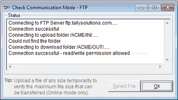

A window with the test results for the communication mode is displayed.

Select File: This is enabled only if the mode of communication configured is Online. Click to temporarily upload a file of any size to verify the maximum file size transferable through Online mode of communication.